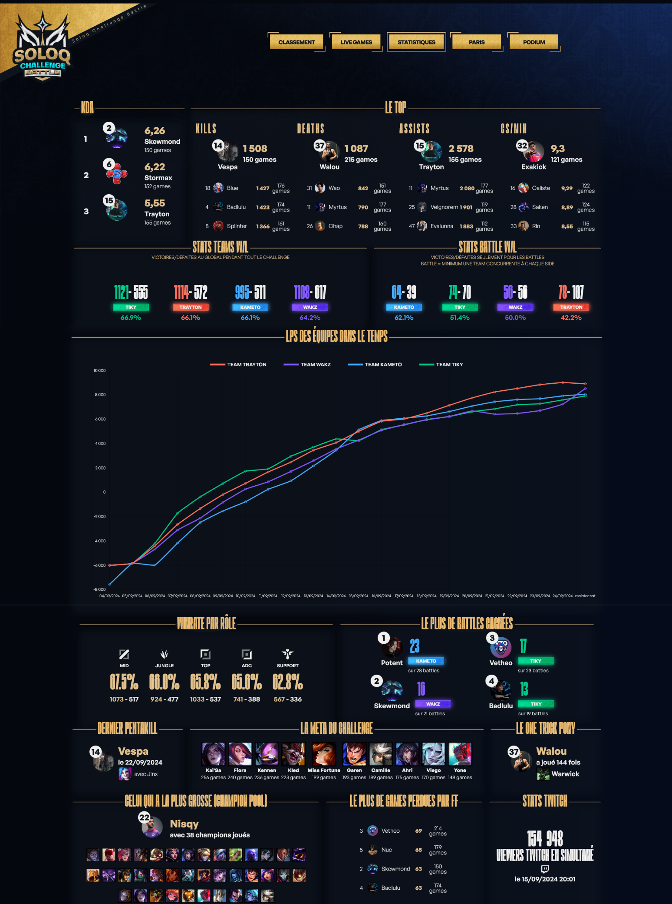
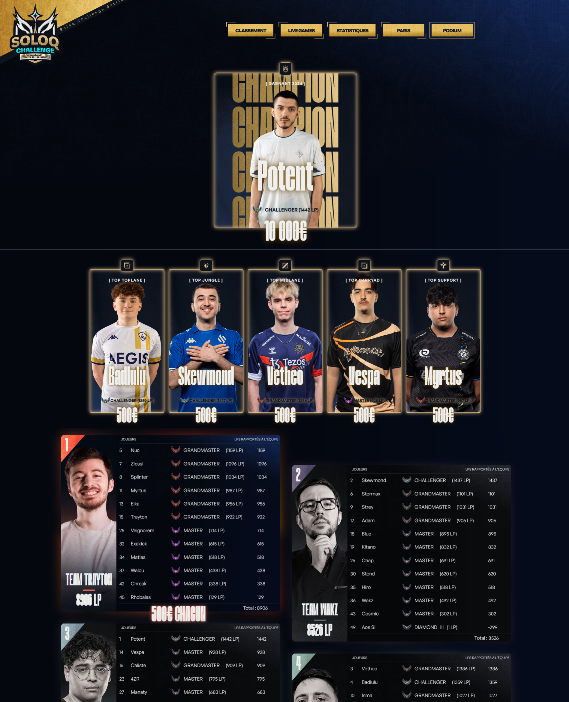
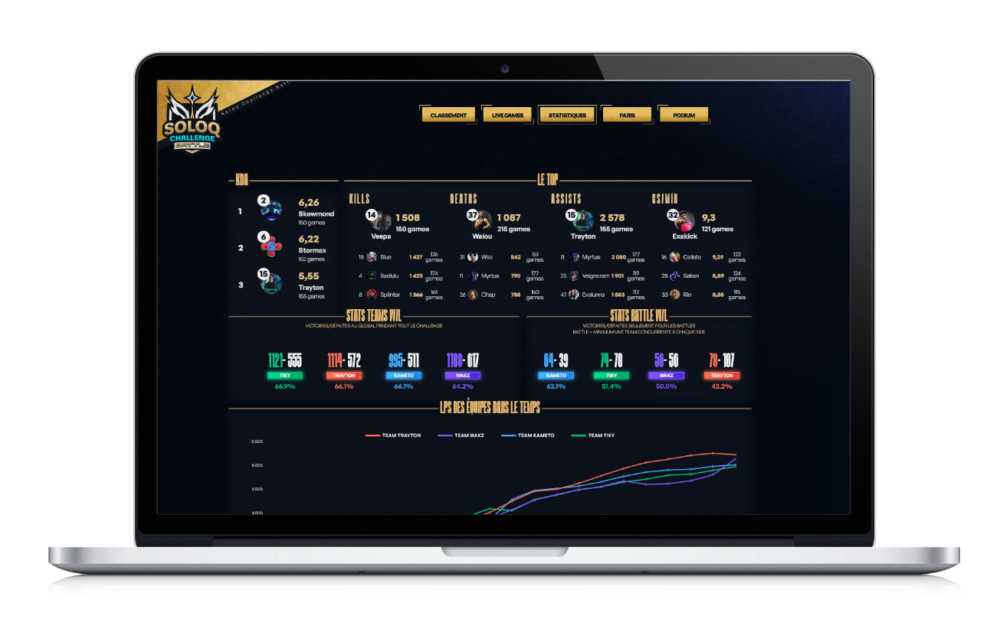
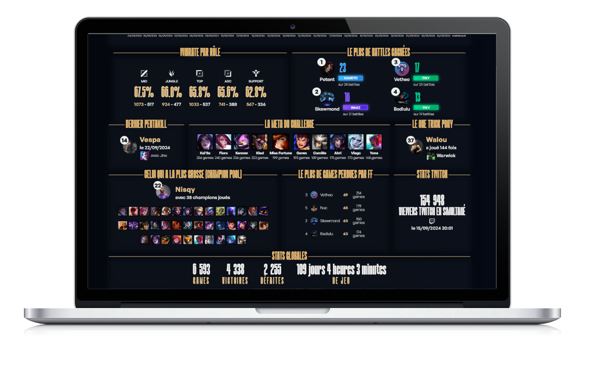

Après le SoloQChallenge France lancé par Trayton avec le support de RiotGames France, Trayton relance en 2024 le SoloQChallenge Battle France réunissant plusieurs streamers dont Kameto, Tiky, Wakz pour s'affronter sur le jeu vidéo League of Legends en SoloQ et en équipe.
Des statistiques en temps réelles qui ont évoluées tout au long des trois semaines de l’événement.
Un podium d'événement qui se met à jour en temps réel et affiche les gagnants à minuit à la fin du SoloQChallenge.
  